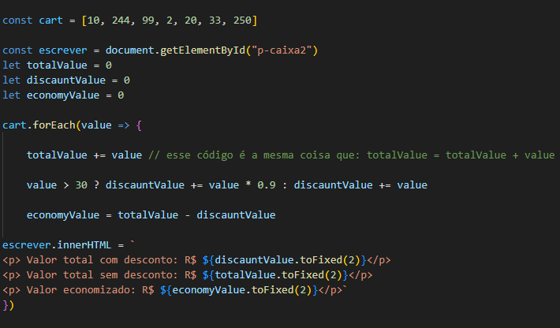
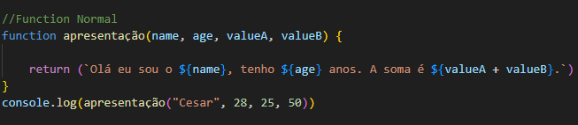
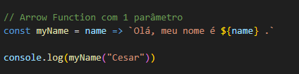
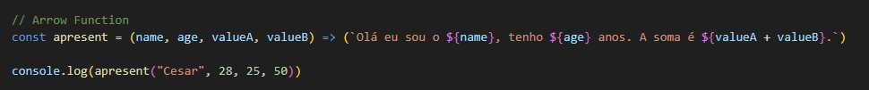

Uma function com parâmetros é uma function que recebe valores como entrada para poder executar uma
ação.
Exemplo:
function myName (name){ ---------------> (name) variável da função
console.log(`Olá ${name} como você ta ?`)
} myName("Cesar") -------------------> (Cesar) valor da variável
Essa função foi "solicitada" com o parâmetro "Cesar", que foi atribuido a variável "name", e a mesma poderia
ser solicitada mais vezes,
com diferentes nomes, exemplo:
myName("Cesar")
myName("Maria")
myName("João")
Também é possível fazer funções com duas variáveis ou mais, tanto com palavras como com números, exemplo:
Também é possível fazer funções dentro de funções.
É possível fazer uma variável com um valor padrão caso não haja nenhum valor atribuido a ela, isso somente
se a variável
estiver vazia, caso atribua um valor a ela este valor padrão será ignorado, também serve para as funções com
com mais variáveis, exemplo:
function myName (name = "Sem nome", age = "Não informado"){
console.log(`Olá ${name} , sua idade é ${age} ?`)
}
myName() -----------------> Se não for atribuido nenhum valor a "name", será atribuido "Sem nome"
A variável com valor seria por exemplo: myName("Cesar", "28")
Function / Return
Uma função é um trecho de códigos que é executado quando é chamado, normalmente é uma função do tipo
void, ou seja, não retorna nenhum valor,
e existe a função que retorna o valor, são as que tem o atributo return no final dos códigos,
exemplo:
function soma(value, value2) { --------------------> void - não tem a função de return
}
const resultVoid = soma(10, 20) -------------> variável que recebe o valor da função
console.log(resultVoid + " resultado") --------> a resposta da erro por que não há retorno (não sai de
dentro da função)
Se você ver no "inspecionar" na aba "Console" a resposta dessa função será: "undefined resultado" pois para
essa variável result funcionar
é preciso que o valor da função seja retornado, exemplo:
function soma2(value, value2) { -----------------> agora usando return
return value + value2 -------------------> agora usando o return no que você quiser retornar
}
const resultReturn = soma2(10, 20)
console.log(resultReturn + " resultado") ------> agora com o return, a resposta vai dar correta (30
resultado)
Ou, também pode ser assim: Criando a variável com o retorno da função
function soma3(value, value2) { ----------------> return
const result = value + value2
return result -------------------------> retornando função direto
}
const resultFinal = soma3(10, 20)
console.log(resultFinal + " resultado") ------------> com return, resposta correta (30 resultado)
Obs: As variáveis dentro da função não são as mesmas variáveis de fora da função, elas são
diferentes, não interferem uma na outra.
Mini Desafio: Caixa de Mercado
1- Somar os produtos
2 - Aplicar 10% de desconto nos produtos acima de R$30,00
Valor dos Produtos = 10, 244, 99, 2, 20, 33 e 250.
Resposta:
Usei o for para percorrer os numeros do array(cart), e o if para verificar nesses
numeros se o valor era maior que 30;
Depois fiz duas variáveis (prodComDesconto e prodSemDesconto) do tipo array para guardar os
valores que iam ser selecionados pelo if e else;
O push serve para adicionar valores a um array, foi ele que adicionou os valores selecionados dentro
das variáveis;
Depois usei as functions para somar os valores dentro das variáveis;
A função Number dentro das functions serve para converter os valores em numeros, pois por padrão eles
são strings;
Para finalizar criei uma variavel (valorTotal) somando os dois valores, e fiz um inner.HTML
para escrever o resultado na tela.
Obs: Eu fiz dessa forma, mas esse código não é reutilizavel, então a melhor forma é essa abaixo:

Mini Desafio: Caixa de Mercado (Eficiente)
Resposta mais completa:
Arrow Functions
Uma arrow function é uma forma mais curta de escrever uma função, exemplo:
Arrow Function normal:

Agora com a Arrow Function fica um pouco mais enxuta, e com umas regras mais eficientes, como:
1 - Se for uma função de uma linha só, não precisa usar o return pois ela retorna direto
2 - Se houver só um paramêtro não precisa usar os parênteses
Arrow Function com 1 parâmetro:

Arrow Function com mais parâmetros:

Funções Anônimas
No nosso Mini Desafio: Caixa de Mercado (Eficiente) nós usamos uma função anônima junto com o
forEach, é uma função usando a Arrow Function que não tem
nomenclatura, então por padrão é anônima.
🟄 🟄 🟄 🟄 🟄 🟄 🟄 🟄 🟄 ENUM 🟄 🟄 🟄 🟄 🟄 🟄 🟄 🟄 🟄 🟄
O ENUM é uma ferramenta para criar constantes, mais corretamente dizer que é uma ferramenta para
gravar valores, e posteriormente utilizar esses valores selecionando-os
de forma que ajuda a mitigar os erros humanos, de digitação.
Obs: Quando o ENUM é usado, é possível alterar os valores, apenas alterando o "gabarito" ao
ser criado (os valores serão alterados em todos os lugares onde ele foi chamado).
A forma mais correta de se escrever ENUM é em Caixa Alta.
🟄 🟄 🟄 🟄 🟄 🟄 🟄 🟄 🟄 Map 🟄 🟄 🟄 🟄 🟄 🟄 🟄 🟄 🟄
O Map é uma ferramenta para mapear o Array, ou seja, ele pecorre o array e aplica uma função
em cada elemento do array, retornando um novo array com os valores modificados.
Ele não altera o array original, e sim cria um novo array com as modificações.
Essa ferramenta aceita 3 parâmetros:
1 - item: O item atual que está sendo percorrido (linha e/ou valor em si).
2 - index: Posição (índice) do item atual.
3 - array: O array completo.
const exemplo2 = arrayNumber.map((item, index) => `O número ${item} está na posição ${index}`)
console.log('Exemplo 2' + exemplo2)
Obs: Usamos a Arrow Function para otimizar nosso código, lembrando que quando pulamos a linha
precisamos colocar o Return, pois a arrow function já tem um retorno implícito se for
em apenas 1 linha.
No exemplo abaixo, pulamos a linha, então precisamos colocar o Return.
Desafio da Pulseira - É dado um array com uma lista de pessoas, e se é ou não VIP, se for colocar a cor da
pulseira preta, caso contrário, verde.
Abaixo o código:
Cosntrução: A Construção dessa ferramenta consiste em usar uma constante (newList) que
receberá a função map, depois a array que
receberá a função map (const newList = list.map), depois o nome do item (user) + a
função, que no caso usamos uma arrow function =>.
A partir disso foi criado um map newList, dentro do map uma constante newUser para alterar o
name e vip para nome e pulseira, e nessa alteração
ja criamos um if/else usando o operador ternário para aplicar uma regra, onde se for true
recebe preta, se não, verde. E por fim colocar um return para retornar a resposta:
O Reduce é usado para transformar um array em um único valor, por exemplo se você tem uma array com
algum valor x de item, e você quer somar esses valores pra saber o valor x total da sua
array, para isso você usaria o reduce.
acumulador: Sempre guardar o valor anterior. valorAtual: Sempre guardar o valor atual. 0: Valor inicial do acumulador.
Então esssa função esta pegando o valor de acumulador (0) mais o valor atual (1, depois 2, depois 3...), e
repetindo o processo até o final do array. (até somar toda a array)
Se o valor do acumulador fosse 10 por exemplo, então ele somaria 10 (valor inicial) + 1 (valor atual) + 2 +
3... até o final do array, ou seja ao invés da soma total dar 55, daria 65.
Exemplo Prático 1 - Carrinho de Compras
Nesse exemplo abaixo eu tenho os produtos e os valores por kilo de cada um, eu quero uma nova array com o
valor total da compra, ou seja, transformar estes valores em apenas 1:
O Filter serve para filtrar valor(es) de uma array, por exemplo se você tem uma array com algum valor x de
item, e você quer selecionar apenas os valores maiores ou menores que algum valor, para isso você usaria o filter.
Obs: Assim como o map o item é a variável obrigatória que se utiliza no Filter.
Nesse caso acima estamos usando o filter para selecionar apenas os itens menores que 100.
Obs: Nesse exemplo por ser uma condição simples, conseguimos colocar assim tudo na mesma linha e sem o return, mas caso contrário ficaria como as anteriores.
Desafio Completo: Usando o Map, Filter e Reduce
Neste desafio precisamos cumprir essas 3 regras:
1 - Adicionar 10% de valor de mercado a todas as companhias -> MAP
2 - Filtrar somente companhias fundadas antes de 1990 -> FILTER
3 - Somar o valor de mercado total das empresas fundadas antes de 1990 -> REDUCE
Obs: Na resolução mais correta podemos ver que ao acabar de fazer uma função, podemos ja referênciar outra logo após colocando
um ponto final e continuando a escrever.